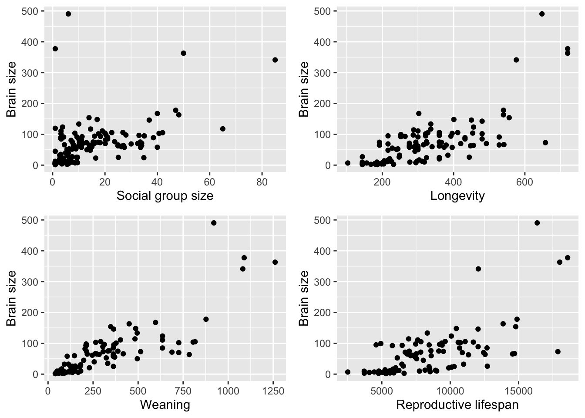
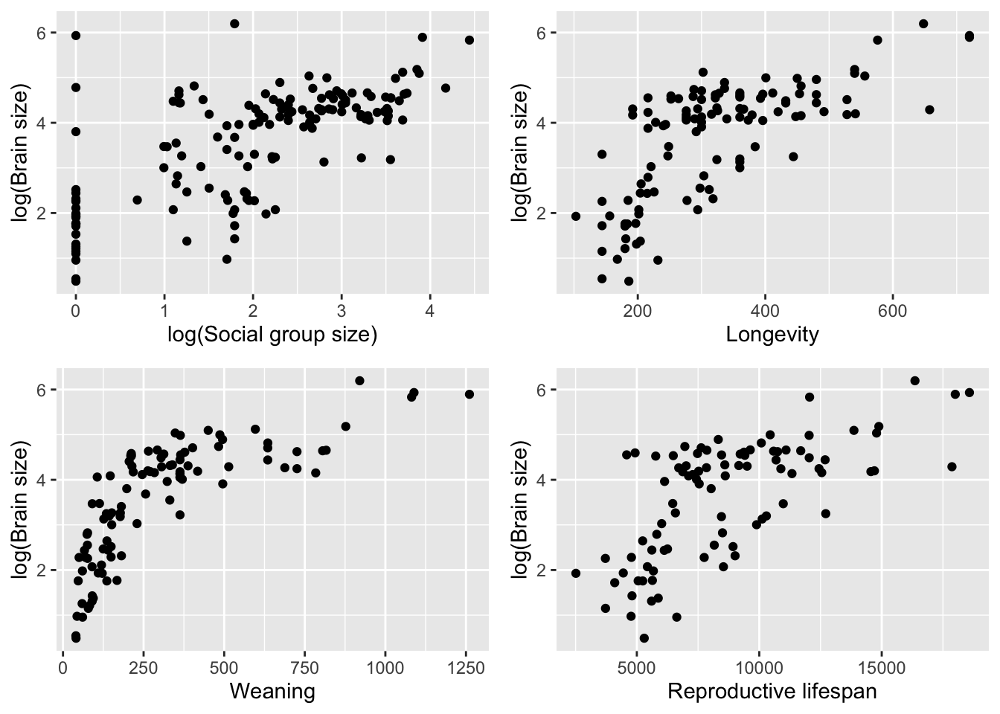
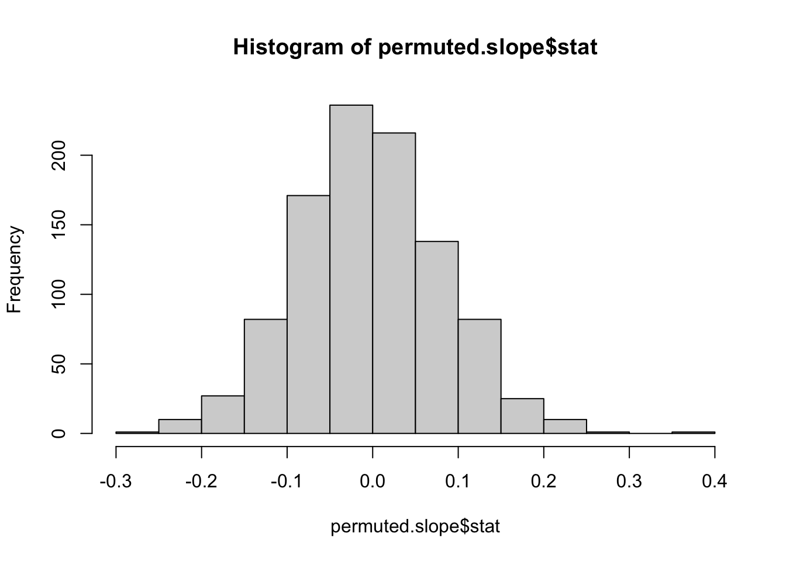
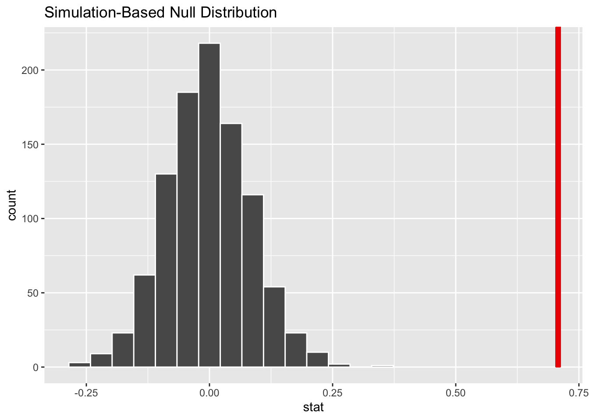
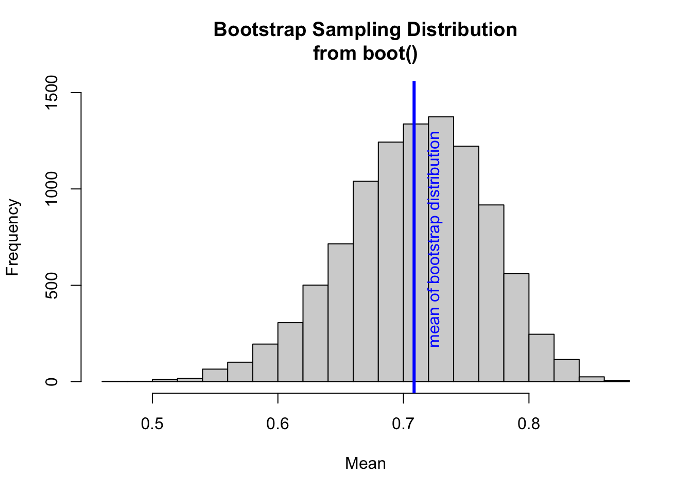

Load the “Street_et_al_2017.csv” dataset as a “tibble” named d.
Run exploratory data analysis of the five-number summary (median, minimum and maximum and 1st and 3rd quartile values), plus mean and standard deviation, for each quantitative variable.
Data source:
Street SE, Navarrete AF, Reader SM, and Laland KN. (2017). Coevolution of cultural intelligence, extended life history, sociality, and brain size in primates. Proceedings of the National Academy of Sciences 114: 7908–7914.
Plot brain size (ECV) as a function of social group size (Group_size), longevity (Longevity), juvenile period length (Weaning), and reproductive lifespan (Repro_lifespan).
p1 <-ggplot(data = d %>%drop_na(ECV, Group_size), aes(y = ECV, x = Group_size)) +geom_point() +ylab("Brain size") +xlab("Social group size")p2 <-ggplot(data = d %>%drop_na(ECV, Longevity), aes(y = ECV, x = Longevity)) +geom_point() +ylab("Brain size") +xlab("Longevity")p3 <-ggplot(data = d %>%drop_na(ECV, Weaning), aes(y = ECV, x = Weaning)) +geom_point() +ylab("Brain size") +xlab("Weaning")p4 <-ggplot(data = d %>%drop_na(ECV, Repro_lifespan), aes(y = ECV, x = Repro_lifespan)) +geom_point() +ylab("Brain size") +xlab("Reproductive lifespan")library(ggpubr)ggarrange(p1, p2, p3, p4,labels =NULL,ncol =2, nrow =2)

# better as log transformedd <- d %>%mutate(logECV =log(ECV), logGS =log(Group_size))p1 <-ggplot(data = d %>%drop_na(logECV, logGS), aes(y = logECV, x = logGS)) +geom_point() +ylab("log(Brain size)") +xlab("log(Social group size)")p2 <-ggplot(data = d %>%drop_na(logECV, Longevity), aes(y = logECV, x = Longevity)) +geom_point() +ylab("log(Brain size)") +xlab("Longevity")p3 <-ggplot(data = d %>%drop_na(logECV, Weaning), aes(y = logECV, x = Weaning)) +geom_point() +ylab("log(Brain size)") +xlab("Weaning")p4 <-ggplot(data = d %>%drop_na(logECV, Repro_lifespan), aes(y = logECV, x = Repro_lifespan)) +geom_point() +ylab("log(Brain size)") +xlab("Reproductive lifespan")library(ggpubr)ggarrange(p1, p2, p3, p4,labels =NULL,ncol =2, nrow =2)

Step 3
Derive by hand the ordinary least squares regression coefficients \(\beta1\) and \(\beta0\) for ECV as a function of social group size.
# remove rows where one of these variables is missingd <- d %>%drop_na(logECV, logGS)# slope, beta_1 = correlation of response and predictor variables * ratio of sd of response and predictor(b1 <-cor(d$logECV, d$logGS) * (sd(d$logECV)/sd(d$logGS)))
[1] 0.7078342
# intercept, beta_0 = mean of response variable - b1 * mean of predictor variable(b0 <-mean(d$logECV) - b1*mean(d$logGS))
[1] 2.145548
Step 4
Confirm the lm() function yields the same results.
Repeat the analysis above for three different major radiations of primates - “catarrhines”, “platyrrhines”, and “strepsirhines”) separately. These are stored in the variable Taxonomic_group. Do your regression coefficients differ among groups? How might you determine this?
(m_c <-lm(logECV ~ logGS, data = d %>%filter(Taxonomic_group =="Catarrhini")))
Call:
lm(formula = logECV ~ logGS, data = d %>% filter(Taxonomic_group ==
"Catarrhini"))
Coefficients:
(Intercept) logGS
4.556383 -0.007746
(m_p <-lm(logECV ~ logGS, data = d %>%filter(Taxonomic_group =="Platyrrhini")))
Call:
lm(formula = logECV ~ logGS, data = d %>% filter(Taxonomic_group ==
"Platyrrhini"))
Coefficients:
(Intercept) logGS
1.477 0.804
(m_s <-lm(logECV ~ logGS, data = d %>%filter(Taxonomic_group =="Strepsirhini")))
Call:
lm(formula = logECV ~ logGS, data = d %>% filter(Taxonomic_group ==
"Strepsirhini"))
Coefficients:
(Intercept) logGS
1.8014 0.6282
Test the difference between regression coefficients by adding Taxonomic_group as a factor with Catarrhini as reference group
m <-lm(logECV ~ logGS +as.factor(Taxonomic_group), data = d)summary(m)
Call:
lm(formula = logECV ~ logGS + as.factor(Taxonomic_group), data = d)
Residuals:
Min 1Q Median 3Q Max
-1.72759 -0.42497 -0.04506 0.48935 2.26155
Coefficients:
Estimate Std. Error t value Pr(>|t|)
(Intercept) 3.67170 0.19943 18.411 < 2e-16 ***
logGS 0.32166 0.06729 4.780 4.21e-06 ***
as.factor(Taxonomic_group)Platyrrhini -1.09254 0.14853 -7.356 1.23e-11 ***
as.factor(Taxonomic_group)Strepsirhini -1.64610 0.18769 -8.770 4.07e-15 ***
---
Signif. codes: 0 '***' 0.001 '**' 0.01 '*' 0.05 '.' 0.1 ' ' 1
Residual standard error: 0.7056 on 147 degrees of freedom
Multiple R-squared: 0.6831, Adjusted R-squared: 0.6766
F-statistic: 105.6 on 3 and 147 DF, p-value: < 2.2e-16
The regression coefficients appear to be different when separate regression analyses are run on each taxonomic group. I tested this by re-running the model with Taxonomic_group as a factor, and found a significant effect (p<0.05) of Taxonomic_group between Catarrhini and Platyrrhini as well as Catarrhini and Strepsirhini.
The p value for individual coefficients is for the difference between the particular level mean and the first (or reference) level mean
Step 6
For the first regression of ECV on social group size, calculate the standard error for the slope coefficient, the 95% CI, and the p value associated with this coefficient by hand. Also extract this same information from the results of running the lm() function.
Standard error of regression slope, beta_1 = Mean squared error divided by the sums of squares of x variable
The test statistic = the value of the estimated regression coefficient divided by the estimate of the standard error for that coefficient (i.e., beta / SE_beta)
m <-lm(logECV ~ logGS, data = d)# Univariate regression (one predictor, one response) estimates two parameters (beta coeffs)df_error <-nrow(d) -1-1# number of samples - (1 + number of predictor values)SSE <-sum((m$model$logECV - m$fitted.values) ^2) # SSE = logECV - predicted logECVMSE <- SSE/df_error # mean squared errorSSX <-sum((d$logGS -mean(d$logGS)) ^2) # sum of squares of x# calculate standard error of regression slope coefficient, beta_1, by hand(se_b1 <-sqrt(MSE/SSX))
Use a permutation approach with 1000 permutations to generate a null sampling distribution for the slope coefficient. What is it that you need to permute? What is the p value associated with your original slope coefficient? You can use either the percentile method (i.e., using quantiles from the actual permutation-based null sampling distribution) or a theory-based method (i.e., using the standard deviation of the permutation-based null sampling distribution as the estimate of the standard error, along with a normal or t distribution), or both, to calculate this p value.
# beta_1 null sampling distribution# generate a permutation distribution, breaking the association between predictor and response variablelibrary(infer)set.seed <-1permuted.slope <- d %>%specify(logECV ~ logGS) %>%# select the columns of interest AND declare their relationshiphypothesize(null ="independence") %>%# declare a null hypothesis generate(reps =1000, type ="permute") %>%# construct a null distributioncalculate(stat ="slope") # calculates summary statistics from the output of infer core functionspermuted.slope
hist(permuted.slope$stat) # should be zero bounded (null = 0)

visualize(permuted.slope) +shade_p_value(obs_stat = b1, direction ="greater") # far away from distribution because p value associated is very tiny

# to estimate a p-value from simulation, [1] identify the number of samples from the generated sampling distribution that are at least as large as our sample statistic, then [2] divide this result by the number of simulations.(p_perm <-sum(abs(permuted.slope$stat) >=abs(b1))/1000) # no samples are as large or larger than the original slope coefficient, so the p-value is calculated as 0
# can also calculate b1_perm p-value using {infer}(p_perm <-get_p_value(permuted.slope, t_statistic, direction ="both"))
# A tibble: 1 × 1
p_value
<dbl>
1 0
Sample statistic is a random variable whose values are generated from samples, such as the sample mean, the sample proportion, the difference in sample means, or sample proportions.
Sampling distribution of the sample statistic is the range of all its values together with their probabilities. For example, the distribution of the sample mean or sample proportion is approximately a normal distribution for large enough sample sizes.
P-value is the probability of getting values at least as extreme as our observed data, assuming the null hypothesis is true. Depending on whether the p-value is below or above a certain threshold, it is used to accept or reject the null hypothesis.
Step 8
Use bootstrapping to generate a 95% CI for your estimate of the slope coefficient using both the quantile method and the theory-based method (i.e., using on the standard deviation of the bootstrapped sampling distribution as an estimate of the standard error). Do these CIs suggest that your slope coefficient is different from zero? Yes, the slope coefficient appears close to 0.7
For this approach, we define a custom function that we will use to generate the statistic we are interested in that we will then calculate for each bootstrapped sample:
library(boot)# the `beta_1()` function calculates the mean value of a bootstrap sample taken # with replacement from a vector of interest passed into `data`.# The function we write for `statistic=` has two arguments, a data set, # and a set of indices which are generated at random by the `boot()` function to # sample from the dataset. This corresponds to the default argument `stype='i'` # in the `boot()` callbeta_1 <-function(data, indices) {return(cor(data$logGS[indices], data$logECV[indices]) * (sd(data$logECV)/sd(data$logGS)))}# referring to specific response/predictor columns within data, not flexible
Then, we run the boot() function passing in the data to be resampled from (“data=”), the statistic we want to calculate (“statistic=”), and the number of bootstrap replicates (or “resamples”) we want using the argument “R=”.
set.seed <-1n_boot <-10000boot <-boot(data = d, statistic = beta_1, R = n_boot) # stype='i' by default# the object returned includes a table, `t`, of `stat`s results from each# bootstrap
Calculate boot 95% CI by hand using quantile method (best way)
alpha <-0.05# ci bounds inferred from quantiles of bootstrap sampling distribution(ci_quantile <-quantile(boot$t, probs =c(alpha/2, 1- alpha/2)))
2.5% 97.5%
0.5884596 0.8086940
Calculate boot 95% CI by hand using theoretical method
# ci bounds inferred from *original sample mean* and sd of bootstrap sampling# distributionci_theory <-qnorm(c(0.025, 0.975), mean = b1, sd =sd(boot$t))
# Visualizing the results and comparing methods for calculating CIshist(boot$t, breaks =25, ylim =c(0, 1500), xlab ="Mean", main ="Bootstrap Sampling Distribution\nfrom boot()")abline(v =mean(boot$t), col ="blue", lwd =3) # mean of our simulated samplestext(x =mean(boot$t) +0.02, y =700, "mean of bootstrap distribution ", col ="blue",srt =90, pos =3)

Use the boot.ci() function from the {boot} package to calculate CIs based on presumed theoretical shapes for the sampling distribution. The “basic” and “percent” intervals are the closest to the empirical quantile method.
Warning in boot.ci(boot): bootstrap variances needed for studentized intervals
abline(v = ci$basic[4], col ="green", lwd =2) # based on normal distributionabline(v = ci$basic[5], col ="green", lwd =2)abline(v = ci$percent[4], col ="red", lwd =2)abline(v = ci$percent[5], col ="red", lwd =2)